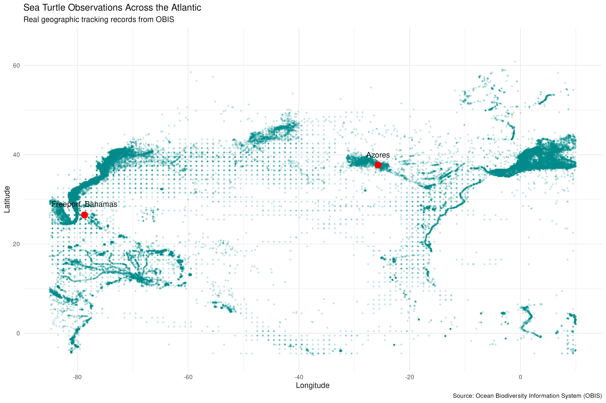

Voyages & Logs · Marine Research · Stories & Films
Welcome to my personal ocean exploration website—a space for future sailing logs, marine research, and documentaries & photography.
Explore the Website
Sailing trips, passage notes, and route journals at sea—inspired by a proposed Atlantic crossing from Freeport, Bahamas, to the Azores.
Ocean data explorations and marine science projects investigating sea turtle distribution and movement across the Atlantic Ocean.
A space reserved for future ocean documentaries, short films, and photography from sailing voyages and marine fieldwork.
Featured Project: Across the Atlantic
This project explores sea turtle migration across the Atlantic Ocean using real tracking data.
Our journey follows a sailing route from Freeport, Bahamas, toward the Azores while exploring where sea turtles travel, how far they migrate, and how their paths connect across the ocean.
How do sea turtle migration patterns connect the Caribbean and the Atlantic Ocean?
120,718 Atlantic Observations · OBIS
The following map displays 120,718 sea turtle observations from the Atlantic study region. These observations help illustrate the geographic distribution of sea turtles across the ocean.

Route Note: The red markers identify Freeport, Bahamas, and the Azores, Portugal. The sailing route is a proposed journey, not a measured turtle migration path.
Explore more from Across the Atlantic: